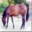

pytorch学习3
Pytorch学习3
torchvision 学习
pytorch的很多API可以去pytorch.org
下面来看一个加载：

import torchvision
train_set = torchvision.datasets.CIFAR10(root="./dataset",train=True,download=True)
test_set = torchvision.datasets.CIFAR10(root="./dataset",train=False,download=True) 稍等片刻，就会下载好数据！
来测试一下：
print(test_set[0]) 开debug发现还是很多属性的！
这里有相关的read_me:
The CIFAR-10 and CIFAR-100 are labeled subsets of the 80 million tiny images dataset. They were collected by Alex Krizhevsky, Vinod Nair, and Geoffrey Hinton.
The CIFAR-10 dataset
CIFAR-10数据集由10个类别的60000张32x32彩色图像组成，每个类别有6000张图像。有50000个训练图像和10000个测试图像。
数据集分为五个训练批次和一个测试批次，每个批次有10000张图像。测试批次包含从每个类别中随机选择的1000幅图像。训练批包含按随机顺序排列的剩余图像，但一些训练批可能包含来自一个类的图像多于来自另一类的图像。在它们之间，训练批次正好包含每个类的5000个图像。
以下是数据集中的类，以及每个类的10张随机图像：
| airplane |  |
 |
 |
 |
 |
 |
||||
|---|---|---|---|---|---|---|---|---|---|---|
| automobile |  |
 |
 |
 |
 |
 |
 |
|||
| bird |  |
 |
 |
 |
 |
 |
||||
| cat |  |
 |
 |
 |
 |
 |
||||
| deer |  |
 |
 |
 |
||||||
| dog |  |
 |
 |
 |
 |
|||||
| frog |  |
 |
 |
 |
||||||
| horse |  |
 |  |
 |
 |
 |
||||
| ship |  |
 |
 |
 |
||||||
| truck |  |
 |
 |
 |
 |
 |
这些类是完全互斥的。汽车和卡车之间没有重叠。“汽车”包括轿车、SUV之类的东西。“卡车”只包括大卡车。两者都不包括皮卡。
下载
如果您要使用此数据集，请引用本页底部的技术报告。
|版本|大小|md5sum|
| —————————————————————————————— | ——— | ———————————————— |
|[CIFAR-10 python版本](http://www.cs.toronto.edu/~kriz/cifar-10-python.tar.gz）|163 MB | c58f30108f718f92721af3b95e74349a|
|[CIFAR-10 Matlab版本](http://www.cs.toronto.edu/~kriz/cifar-10-matlab.tar.gz）|175 MB |70270af85842c9e89bb428ec9976c926|
|[CIFAR-10二进制版本（适用于C程序）](http://www.cs.toronto.edu/~kriz/cifar-10-binary.tar.gz）|162 MB | c32a1d4ab5d03f1284b67883e8d87530|
基线结果
你可以在这个数据集上找到一些基线可复制的结果在cuda convnet的项目页面上. 这些结果是用卷积神经网络获得的。简单地说，在没有数据扩充的情况下，它们的测试误差为18%，在有数据扩充的条件下为11%。此外，Jasper Snoek其中，他使用贝叶斯超参数优化来找到权重衰减和其他超参数的良好设置，这使他能够使用获得18%的网络架构获得15%的测试错误率（没有数据扩充）。
其他结果
罗德里戈·贝南森好心地在他的网站上收集了CIFAR-10/100和其他数据集的结果；点击此处查看。
数据集布局
Python/Matlab版本
我（这里指作者）将描述数据集的Python版本的布局。Matlab版本的布局是相同的。
档案包含文件data_batch_1，data_batch_2。。。，data_batch_5以及test_batch。这些文件中的每一个都是用[cPickle]生成的Python“pickle”对象(http://www.python.org/doc/2.5/lib/module-cPickle.html). 下面是一个python2例程，它将打开这样一个文件并返回一个字典：
def unpickle（文件）：
导入cPickle
打开（文件，'rb'）为fo：
dict=cPickle.load（fo）
返回dict
还有一个蟒蛇3版本：
def unpickle（文件）：
进口泡菜
打开（文件，'rb'）为fo：
dict=pickle.load（fo，编码=“字节”）
返回dict
以这种方式加载的每个批处理文件都包含一个字典，其中包含以下元素：
-数据—一个10000x3072数字uint8s的数组。阵列的每一行存储一个32x32颜色的图像。前1024个条目包含红色通道值，接下来的1024个条目为绿色，最后的1024个为蓝色。图像按行主顺序存储，因此阵列的前32个条目是图像第一行的红色通道值。
-标签—包含0-9范围内的10000个数字的列表。索引i处的数字表示数组数据中第i个图像的标签。
数据集包含另一个名为batches.meta的文件。它也包含一个Python字典对象。它包含以下条目：
-label_names——一个10元素列表，为上述标签数组中的数字标签提供有意义的名称。例如，label_names[0]=“飞机”、label_names[1]=“汽车”等。
二进制版本
二进制版本包含文件data_batch_1.bin、data_batch_2.bin、…、data_back_5.bin以及test_batch.bin。这些文件的格式如下：
<1 x标签><3072 x像素>
...
<1 x标签><3072 x像素>
换句话说，第一个字节是第一个图像的标签，它是0-9范围内的数字。接下来的3072个字节是图像的像素值。第一个1024字节是红色通道值，接下来的1024字节是绿色，最后的1024字节为蓝色。这些值按行主顺序存储，因此前32个字节是图像第一行的红色通道值。
每个文件包含10000个这样的3073字节的图像“行”，尽管没有任何行的分隔符。因此，每个文件的长度应该恰好为30730000字节。
还有另一个文件，名为batches.meta.txt。这是一个ASCII文件，它将0-9范围内的数字标签映射到有意义的类名。它只是10个类名的列表，每行一个。第i行的类名对应于数字标签i。
这个数据集和CIFAR-10一样，只是它有100个类，每个类包含600个图像。每节课有500个训练图像和100个测试图像。CIFAR-100中的100个类被分组为20个超类。每个图像都带有一个“精细”标签（它所属的类）和一个“粗略”标签（其所属的超类）。
以下是CIFAR-100中的类列表：
|超类|类|
| ——————————————— | ——————————————————————————- |
|水生哺乳动物|海狸、海豚、水獭、海豹、鲸鱼|
|鱼类|水族馆鱼类、比目鱼、鳐鱼、鲨鱼、鳟鱼|
|花|兰花、罂粟、玫瑰、向日葵、郁金香|
|食品容器|瓶子、碗、罐头、杯子、盘子|
|水果和蔬菜|苹果、蘑菇、橙子、梨、甜椒|
|家用电器|时钟、电脑键盘、灯、电话、电视|
|家用家具|床、椅子、沙发、桌子、衣柜|
|昆虫|蜜蜂、甲虫、蝴蝶、毛毛虫、蟑螂|
|大型食肉动物|熊、豹、狮子、老虎、狼|
|大型人造户外物品|桥梁、城堡、房屋、道路、摩天大楼|
|大型自然户外场景|云、森林、山脉、平原、海洋|
|大型杂食动物和草食动物|骆驼、牛、黑猩猩、大象、袋鼠|
|中型哺乳动物|狐狸、豪猪、负鼠、浣熊、臭鼬|
|非昆虫无脊椎动物|螃蟹、龙虾、蜗牛、蜘蛛、蠕虫|
|人|婴儿，男孩，女孩，男人，女人|
|爬行动物|鳄鱼、恐龙、蜥蜴、蛇、乌龟|
|小型哺乳动物|仓鼠、老鼠、兔子、鼩鼩、松鼠|
|树木|枫树、橡树、棕榈树、松树、柳树|
|车辆1|自行车、公共汽车、摩托车、皮卡、火车|
|车辆2|割草机、火箭、有轨电车、坦克、拖拉机|
是的，我知道蘑菇不是真正的水果或蔬菜，熊也不是真正的食肉动物。
下载
|版本|大小|md5sum|
| —————————————————————————————— | ——— | ———————————————— |
|[CIFAR-100 python版本](http://www.cs.toronto.edu/~kriz/cifar-100-python.tar.gz）|161 MB | eb9058c3a382ffc7106e4002c42a8d85|
|[CIFAR-100 Matlab版本](http://www.cs.toronto.edu/~kriz/cifar-100-matlab.tar.gz）|175 MB |6a4bfa1dcd5c9453dda6bb54194911f4|
|[CIFAR-100二进制版本（适用于C程序）](http://www.cs.toronto.edu/~kriz/cifar-100-二进制.tar.gz）|161 MB |03b5dce0913d631647c71ecec9e9cb8|
数据集布局
python/Matlab版本
python和Matlab版本在布局上与CIFAR-10相同，所以我不会在这里浪费空间来描述它们。
二进制版本
CIFAR-100的二进制版本与CIFAR-10的二进制版本一样，只是每个图像都有两个标签字节（粗略和精细）和3072个像素字节，所以二进制文件看起来是这样的：
<1 x粗略标签><1 x精细标签><3072 x像素>
...
<1 x粗略标签><1 x精细标签><3072 x像素>
Sivan Sabato好心地提供了[这份文件](http://www.cs.toronto.edu/~kriz/cifar_indexes），它将cifar-100图像映射到8000万微小图像数据集中的图像。Sivan写道：
该文件有60000行，每行都包含一个指向微小数据库的索引，
其中微小数据库中的第一个图像被索引为“1”。“0”表示不是来自微小数据库的图像。
前50000行对应于训练集，后10000行对应
到测试集。
参考
本技术报告（第3章）更详细地描述了数据集以及收集数据时所遵循的方法。如果您打算使用此数据集，请引用它。